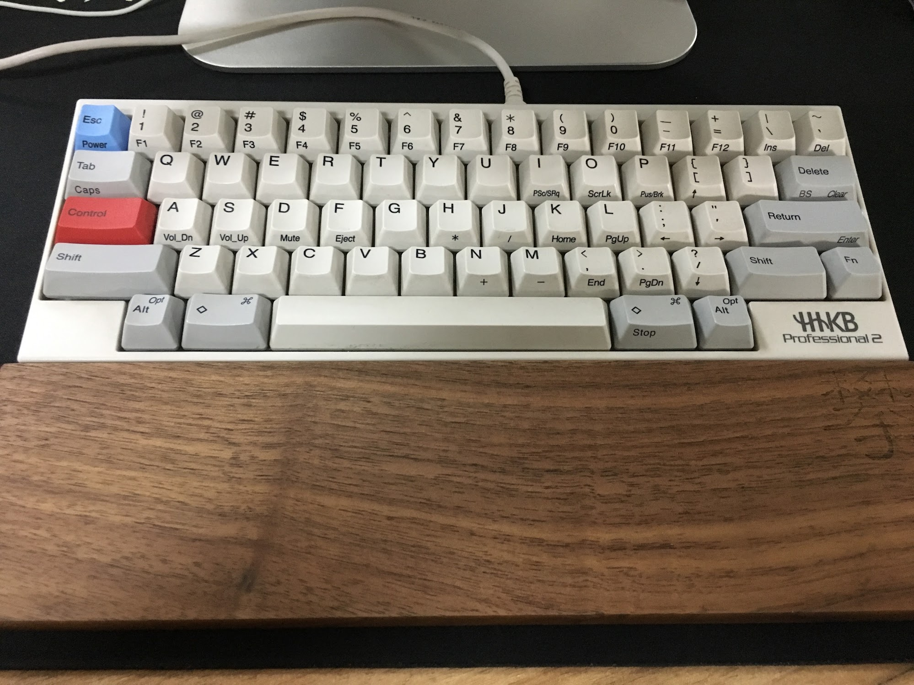
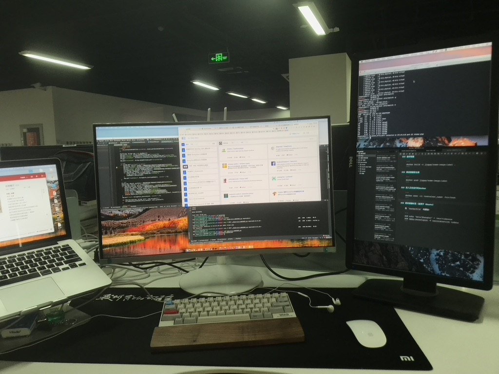
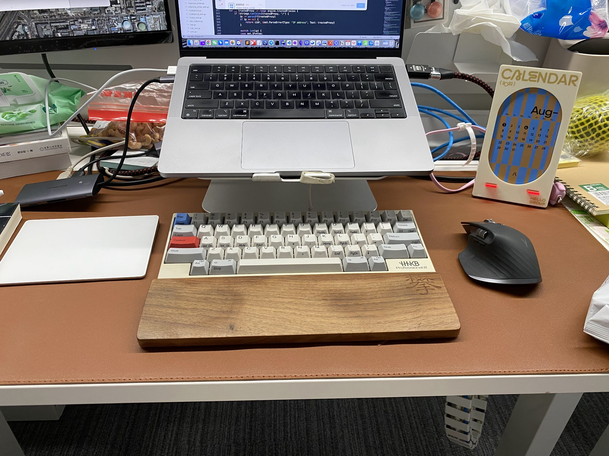
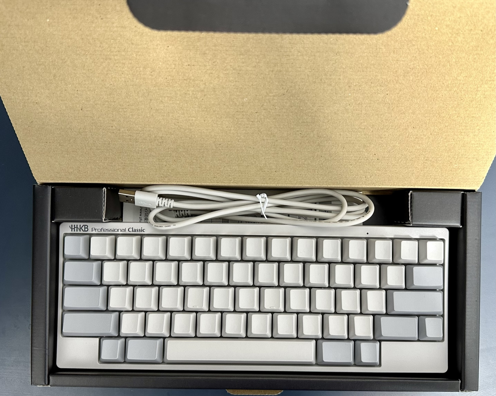
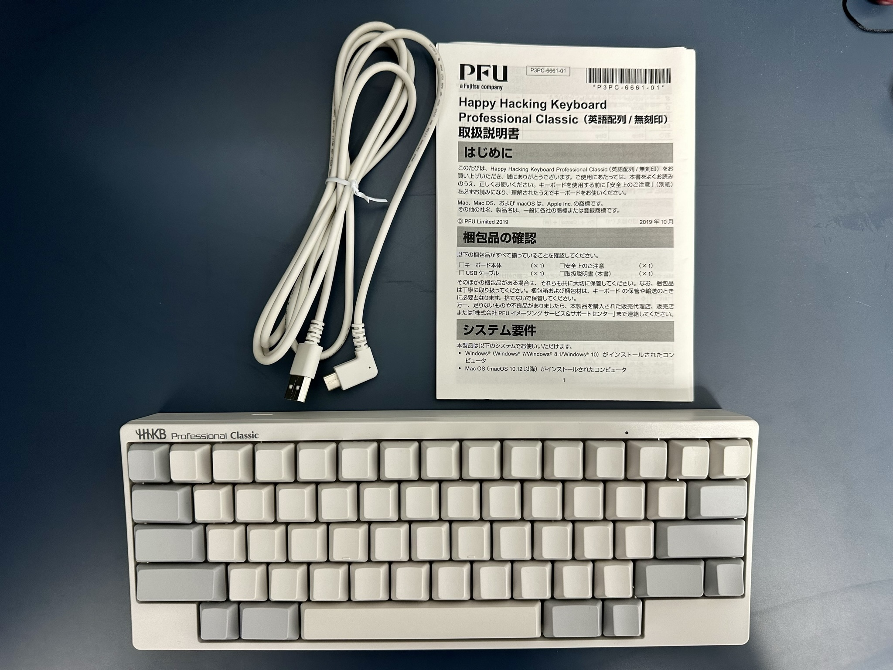

15年我刚工作不久，当时有个 App 叫网易海淘，我通过这个平台在日本亚马逊买到了自己的第一个机械键盘 HHKB，记得当时的价格是1550左右。大学时候好几个舍友都因为玩游戏买了机械键盘，但我一直用的都是罗技很便宜的那款。
这个 HHKB 键盘到现在陪伴了我8年多年，电脑换了好几个、工作换了好几份，没换的一直是这个键盘。有点像换马不换鞍的感觉，HHKB 一直作为我最亲密的战友陪伴着我，我在公司写代码、调戏妹子、和其他人对喷都离不开它，我在公司拍工位照片时也都有它的身影。
17年：

18年：

22年：

这个键盘我是越用越顺手，越用越喜欢，配合上 Keyboard Maestro，大部分工作都可以通过键盘完成，我也会在 IDE 里配置很多自己顺手的快捷键。
入职现在这家公司的时候，公司给我配的是一个15年的15寸 MacbookPro，感觉性能差，所以我在公司一直用的自己的19年有 Touchbar 版本的 Pro，21年左右把自己的 Mac 出了爱回收，换了 M1 Pro。
公司配的电脑就长期在家里搁置，周末的时候偶尔用来处理一些临时的工作，公司配的电脑性能又差电池也不够用，不插电源的状态下半小时就没电了。
在公司用公司配的电脑的同事陆续都换了新电脑，好一些的换了 M1，差一些的也换了我之前用的 Mac 同等的配置，我也在上个月初休陪产假前找 IT 换了个新的电脑，虽然不是 M1，但性能也不错，i9的 Intel 处理器。
用过这款 Mac 的都知道，这个系列最大的槽点就是蝶式键盘，键程极短，毫无打字体验，这就促成了我想在配一个键盘的想法，最开始想着在闲鱼上淘个便宜的，但看来看去没有心怡的，毕竟自己用过的只有 HHKB。
今天我在逛咸鱼的时候看到北京有个人卖 HHKB，他说这个键盘是公司年会奖品，拆封后用了一下不适应就收起来了，标价900。看他的配图是 Professional Classic 的无刻（键帽上没有字）版本，网上说这个版本就是我在用的 Professional2的升级版。我在淘宝查了下价格，基本在1650左右，如果真的如他描述只是拆开试了一下，那么这个900的价格还是很有吸引力的。
我在闲鱼上跟他交流了一下，通过他的回答来看确实是个外行，也不像是骗子，他说键盘在公司，公司在华茂写字楼，今天下午要去公司开会，可以面交。华茂写字楼离我不远，我和他一番周旋后讲到了850的价格，在交易前他再三让我确认是否会用这个键盘，我就说我可以学习。
因为今天北京下暴雨，取键盘的过程还是很坎坷的。我把车听错了停车场，听到了 SKP 购物中心的地下，从停车场上去后冒着雨找对方的写字楼，对方因为要开会，没办法给我，只能把键盘放在了大厅的一个角落里让一名保洁阿姨帮忙看着，我找了好久才找到他的写字楼，当时全身已经湿透了，拿到键盘后往回走找自己的车又找了好久，而且回去的时候才知道，负一层是互通的，早知道我就不冒这么大雨狂奔了。
到家后迫不及待打开盒子开始欣赏这个键盘，真新啊，非常喜欢 HHKB 这种设计的简洁感，HHKB 全名 Happy Hacking Keyboard，果然是程序员的开心键盘。


这篇文章就是我用新的键盘完成的，新的键盘相较于 Professional2 来说更软、更轻、更柔一些，相对更静音，Professional2稍微清脆一些，两者不分伯仲，我都喜欢。虽然新键盘上没有刻字，但用起来毫无违和感，毕竟之前的键盘已经用了8年多。

最开始打算用不到100的价格随便买个普通机械键盘，最后缺花了850买了个自己心怡的HHKB，虽然花了多8倍的价格，但真的是买到心坎儿里了。我对自己不熟悉的领域很谨慎，哪怕不到100块钱也不愿轻易去花，对自己热爱的东西很果断，花多一些钱也愿意。
如果你的男朋友是程序员，相信我，送他这款键盘准没错👨🏻💻
BTW，开车回家的路上还在下雨，我在一个十字路口亲眼目睹了一场车祸，两个车都赶在变黄灯前加速，一个左转一个执行，我眼看着两个车就想游乐场的碰碰车一样撞在了一起，听到 duang 一声、地面颤动了一下，事情太突然，当时的感觉不太真实，车上的人应该都没有大碍，过十字路口还是要注意安全，黄灯能不抢还是不抢。